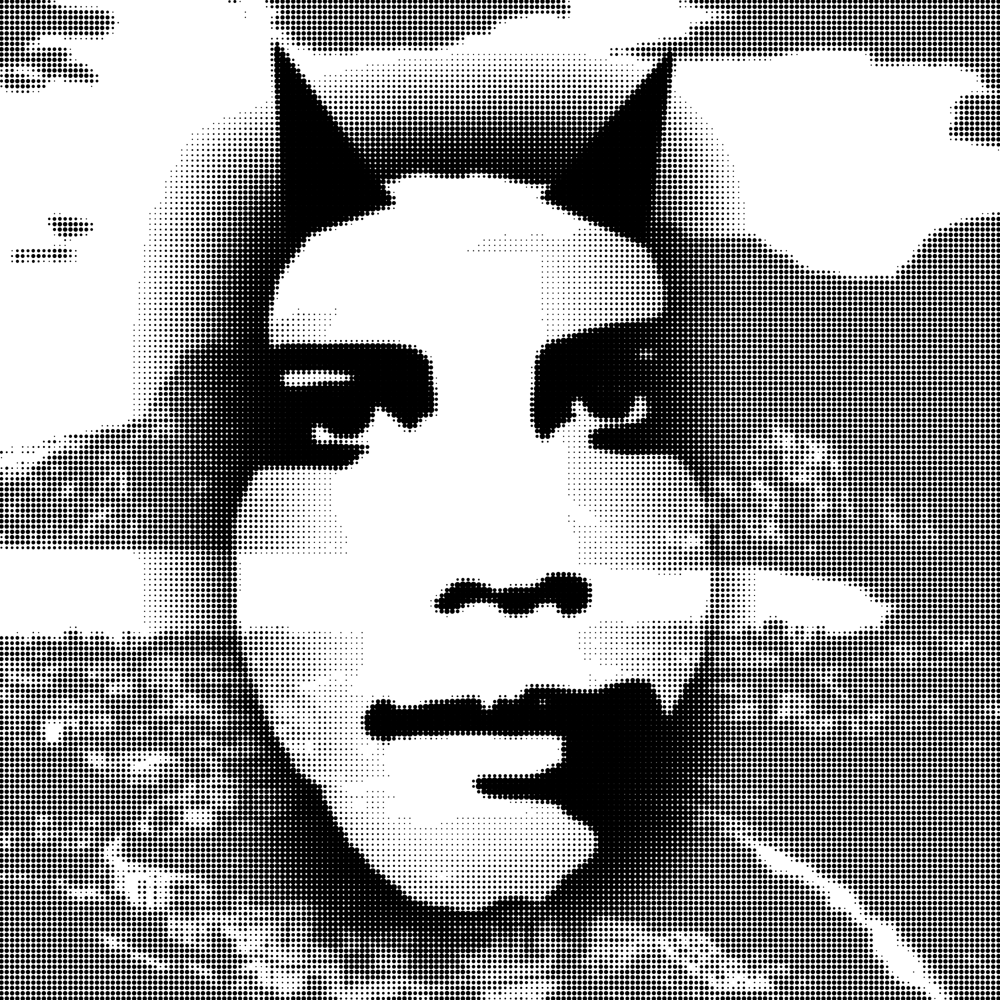

Cittadini del Server, è giunto il tempo della chiarezza. È giunto il tempo della giustizia. È giunto il tempo della libertà.
Noi rivendichiamo un diritto semplice e sacrosanto: la libertà di difendere la nostra comunità. Nel nostro spazio non vi è posto per l’arbitrio mascherato da autorità, né per decisioni prese nell’ombra, né per interessi politici o economici che pieghino la volontà collettiva.
Il BAN non è un capriccio. Il BAN non è un’arma personale. Il BAN è uno strumento di tutela. Esso deve rispondere a criteri ideali chiari, condivisi, meritocratici. Esso deve proteggere chi costruisce, chi partecipa, chi contribuisce. Siamo fermamente contrari: al kick silenzioso dei membri storici senza motivo fondato;

alle decisioni imposte da pochi senza trasparenza; alla censura che soffoca la voce della comunità. Ogni scelta che segna il destino di un membro deve essere ponderata, discussa, deliberata da un gruppo ristretto ma legittimato: almeno cinque membri veterani, custodi della storia del server. Non vogliamo il caos. Vogliamo ordine giusto. Non vogliamo favoritismi. Vogliamo merito. Non vogliamo silenzio imposto. Vogliamo trasparenza. Nel nostro server troverai ciò che ogni persona meritocratica merita: rispetto conquistato, non regalato. voce ascoltata, non censurata. spazio equo, non manipolato. Qui non domina l’interesse personale. Qui non governa il privilegio. Qui decide la comunità consapevole. Noi non promettiamo potere. Promettiamo responsabilità. Non promettiamo favoritismi. Promettiamo equità. Non promettiamo silenzio. Promettiamo verità. Se credi nella libertà di parola senza censura. Se credi nella giustizia senza abusi. Se credi in un server guidato dal merito e non dal capriccio— Unisciti alla Resistenza. Per la trasparenza. Per la comunità. Per il futuro del nostro server.